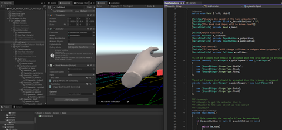
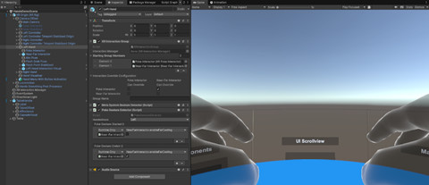
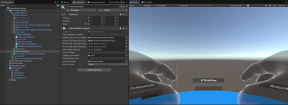

Hand Rig Options:
- Controller Hands
Use when: your target devices have tracked controllers
(Simulated, Quest controllers, Index, Vive, etc.).
What it looks like in the rig
- Left/Right controller transforms under the XR Origin.
- Interactors commonly attached to each controller:
- XR Ray Interactor (far UI / pointing / teleport)
- XR Direct Interactor (near grabbing)
- XR Near-Far Interactor (if overriding above)
- Optional: poke/touch via additional interactors depending
on your setup
- XR Lab Hand Prefabs with Animator Controllers and
Animation
- XR Lab Hand Animator Script
Hand visuals
- Controller model, or a “hand model” animated from
controller input.
- Usually driven by input actions (grip/trigger) rather than
skeletal tracking.
- Input actions are picked up by HandAnimator Script and
trigger Hand Animations.
Pros
- Most broadly supported in VR.
- Stable interaction patterns.
Cons
- Not “true” hand tracking; no per-joint fidelity.

https://gyazo.com/bdacad6556151a7a5d97422b8595c817
Adjustments
Test to add/Adjust input actions and results
Adjust hand location and rotation to taste
- Tracked Hands (In HandsDemoScene)
Use when: your platform provides hand tracking and you
want articulated hands (joints/bones).
What it looks like in the rig
- Left/Right “hand tracking” GameObjects under the XR Origin
(instead of or in addition to controllers).
- Hand visuals commonly come from the XR
Hands package “hand visualizer / hand skeleton” style components.
- Interactors are enabled/disabled depending on
gesture/state.
Interaction styles typically enabled
- Direct interaction (pinch/grab-like near
interactions)
- Poke interaction (index-finger poke for
UI/pressables)
- Gesture-driven enabling/disabling of interactors and
visuals (so you don’t accidentally ray/poke when making certain system
gestures)
Unity’s Hands Interaction Demo sample is the
canonical reference for how this is wired, including the overall hierarchy and
gesture detectors that toggle interactors/visuals. (docs.unity.cn)
Pros
- Natural interaction, articulated hands, better presence.
Cons
- Requires additional packages/features and more device
variability than controllers.
- Dual Mode (In HandsDemoScene)
Use when: you want one build that supports both
controllers and hands, and switches based on what the user is currently using.
Key component
- XR Input Modality Manager (on the XR Origin/running
rig)
- Manages switching between input “modalities” (e.g.,
controller mode vs hands mode)
- In Unity’s demo/sample, the “XR Origin Hands (XR Rig)” is
a variant/prefab configured specifically for this dual-mode approach. (docs.unity.cn)
What changes in practice
- You typically keep both controller objects and
hand-tracking objects in the rig.
- The modality manager activates/deactivates:
- Hand visual GameObjects
- Controller visual GameObjects
- Interactors (ray/direct/poke) that should only be active
for the current modality
Pros
- Best user experience across devices.
- You don’t have to maintain separate scenes/prefabs.
Cons
- More moving parts; you need to be careful about duplicate
interactors competing.

https://gyazo.com/dd1921b1c802f51da60a8838c7085634
- Install Full Dual Mode Hands Rig
- Packages/Samples to Install:
- XR Hands
- XR Hands Samples: HandVisualizer
- XRIT Samples: Hands Interaction Demo
- Access Demo Scene
- Assets/Samples/XR Interaction Toolkit/3.0.10/Hands
Interaction Demo/HandsDemoScene
- Access Hands Rig
- Assets/Samples/XR Interaction Toolkit/3.0.10/Hands
Interaction Demo/Prefabs/XR Origin Hands (XR Rig)

https://gyazo.com/9d2585b3590c50c160b61e1c0d0835ca